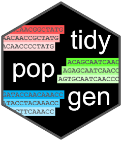
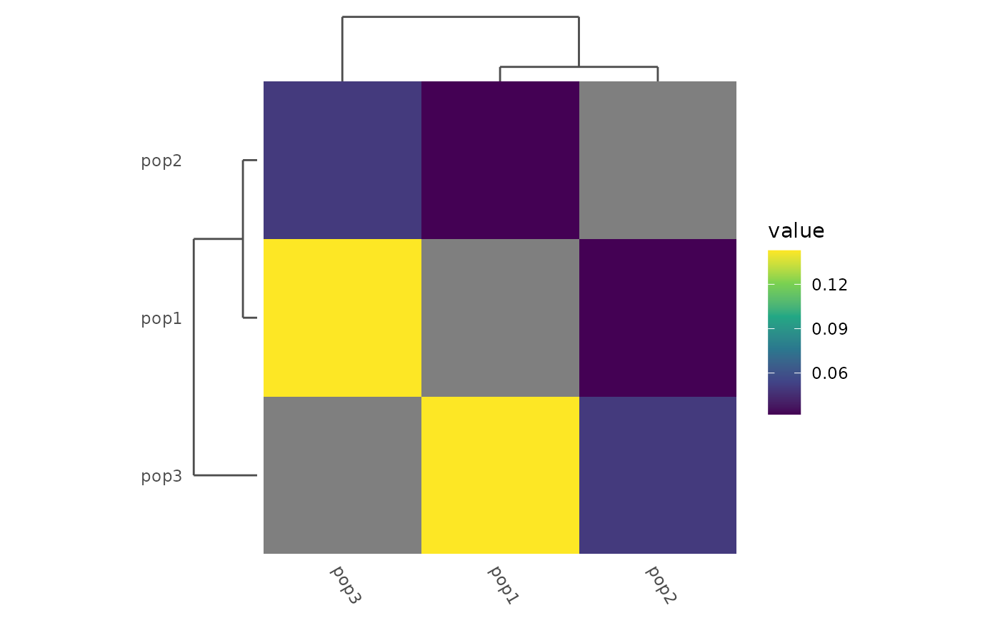

Add dendrograms to a heatmap of pairwise distances
Source:R/heatmap_add_dendro.R
heatmap_add_dendro.RdThis function adds dendrograms to a heatmap of pairwise distances, generated
with heatmap_pairwise(). The heatmap must have been created with an order
function based on hclust(), and the dendrograms will be based on the same
clustering. Dendrograms can be added to the left (row) and/or top (column) of
the heatmap. Note that the heatmap needs to be formatted first, as it can not
be modified easily once the dendrogram panels have been added.
Usage
heatmap_add_dendro(
plot,
side = c("both", "left", "top"),
rel_size = 0.15,
line_color = "grey30",
line_size = 0.5
)Arguments
- plot
A ggplot from
heatmap_pairwise(), with an order function based onhclust().- side
"left" (row dendrogram), "top" (column dendrogram), or "both".
- rel_size
Size of the dendrogram relative to the panel (null unit).
- line_color
Segment colour.
- line_size
Segment linewidth.
Value
A heatmap_dendro object (a subclass of gtable), which auto-draws
on print() and is accepted by plot() and ggsave(), just like a
ggplot or patchwork object.
Details
To correctly align the dendrogram with the labels of the heatmap, we use a
gtable to insert the dendrogram panel directly adjacent to the heatmap
panel. This means that the dendrogram will be perfectly aligned with the
heatmap cells regardless of axis label width. However, manipulating
individual plots in a gtable is not easy, so the heatmap should be formatted
fully before the dendrograms are added.
Examples
example_gt <- load_example_gt("gen_tbl")
# With a pairwise matrix:
fst_dist <- example_gt %>%
group_by(population) %>%
pairwise_pop_fst(method = "Nei87", type = "pairwise")
mat_plot <- heatmap_pairwise(fst_dist,
order = function(x) {
stats::hclust(stats::as.dist(x))
}) +
ggplot2::scale_fill_viridis_c()
heatmap_add_dendro(mat_plot)
